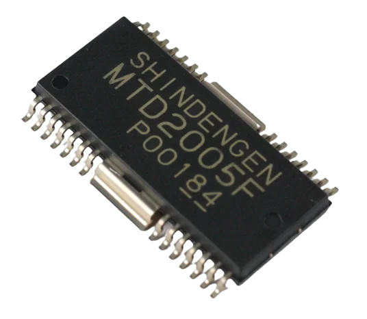

A história do circuito integrado remonta ao século XX, quando os primeiros avanços nessa tecnologia foram feitos. A ideia de um circuito integrado foi levantada por Geoffrey Dummer em meados do século XX. Ele propôs a criação de um dispositivo que pudesse conter vários componentes eletrônicos em um único chip. Os primeiros circuitos integrados eram relativamente simples, com apenas cerca de 10 transistores, além de diodos, resistores e outros componentes básicos. A evolução dos circuitos integrados continuou ao longo das décadas, com avanços significativos na miniaturização e na capacidade de integração de componentes. Os tubos de vácuo, inventados em 1897 por John Ambrose, foram um marco importante na evolução dos circuitos integrados. Os circuitos integrados tiveram um impacto significativo na sociedade, permitindo o desenvolvimento de dispositivos eletrônicos cada vez mais avançados, como computadores, smartphones e outros dispositivos eletrônicos modernos.
